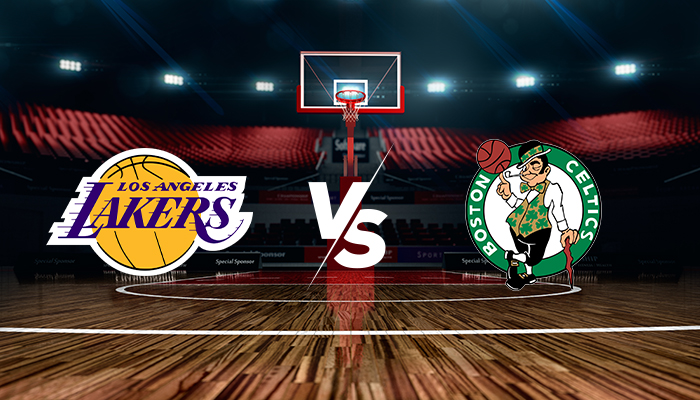
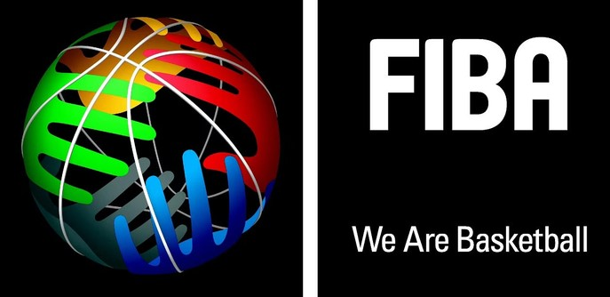

Historia
O basquete é um dos esportes mais populares e emocionantes do mundo, com uma história rica que remonta ao final do século XIX. A origem do basquete está intimamente ligada ao nome de James Naismith, um professor de educação física canadense que, em 1891, criou o jogo enquanto trabalhava na YMCA (Young Men’s Christian Association) em Springfield, Massachusetts, EUA

Maior Rivalidades
A maior rivalidade no basquete, especialmente na NBA, é amplamente considerada a rivalidade entre os Los Angeles Lakers e os Boston Celtics. Essa rivalidade é uma das mais icônicas e duradouras da história do esporte, marcada por décadas de competição intensa e momentos memoráveis.
Basquete no Mundo
O basquete começou a se expandir além das fronteiras dos EUA logo após sua invenção. As primeiras competições internacionais foram organizadas pela Federação Internacional de Basquete (FIBA), fundada em 1932. A inclusão do basquete nos Jogos Olímpicos de 1936 ajudou a aumentar sua visibilidade global. Com o tempo, o esporte encontrou seu caminho para escolas, universidades e clubes em todo o mundo.
